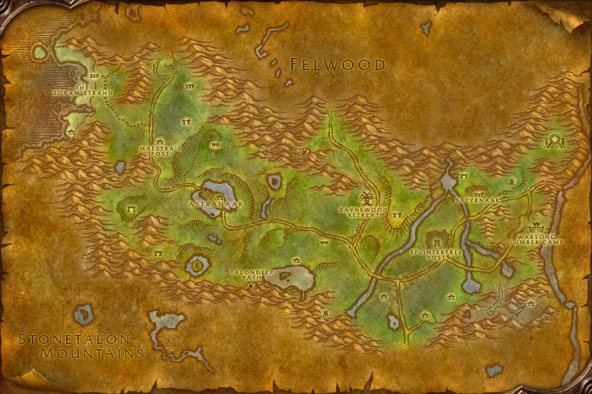

Accès
 Entrée Orneval 14.5, 14.2
Entrée Orneval 14.5, 14.2 5 joueurs · niveaux 22 à 28
5 joueurs · niveaux 22 à 28 12 quêtes · 6 boss
12 quêtes · 6 boss
Le point rouge marque l'entrée du donjon.
Toutes les zones sont sur notre carte interactive.
Un ancien temple elfique englouti sur la côte d'Orneval, aux mains des Nagas et des adorateurs du Marteau du crépuscule.
📅 Mise à jour le 4 novembre 2026🛠 Patch 1.60.1.70755

Entrée Orneval 14.5, 14.2 5 joueurs · niveaux 22 à 28 12 quêtes · 6 bossLe point rouge marque l'entrée du donjon.
Toutes les zones sont sur notre carte interactive.
| Objet | Type |
|---|---|
| Frappe de l'Hydre | Deux mains |
| Pantalon de sangsue | Jambes |
| Cordelière de mousse | Taille |
| Objet | Type |
|---|---|
| Cape luminescente du batteur | Dos |
| Poignets de Serra'kis | Poignets |
| Morsure de Serra'kis | Une main |
| Objet | Type |
|---|---|
| Gants de bataille nagas | Mains |
| Perce-coeur naga | Distance |
| Tulwar des eaux sombres | Main droite |
| Objet | Type |
|---|---|
| Bâtonnet du somnanbule | Deux mains |
| Pantalon du rêveur | Jambes |
| Objet | Type |
|---|---|
| Armure de la tortue | Torse |
| Lien de Ghamoo-ra | Taille |
| Objet | Type |
|---|---|
| Hache des récifs | Deux mains |
| Poings d'algues | Mains |
Butin d'après les données de WoW Classic : Forever a ajouté de nouveaux objets dans les donjons, la liste sera complétée en jeu. Seuls les objets de qualité inhabituelle et mieux sont listés. Passe la souris sur un objet pour voir ses caractéristiques (info-bulle Wowhead), ou clique pour ouvrir sa fiche.
Donnée par : en ramassant Note humide
Donnée par : Je'neu Sancrea (Orneval)
Donnée par : Tsunaman (Les Serres-Rocheuses)
Donnée par : Gerrig Bonegrip (Forgefer)
Récompense : Anneau de soutien
Donnée par : Gershala Nightwhisper (Sombrivage)
Récompense : Pinces de hanneton · Cape de prélat
Donnée par : Veilleur de l'aube Shaedlass (Darnassus)
Donnée par : Garde d'argent Manados (Darnassus)
Récompense : Bottes de la nimbe · Ceinturon de coeur du bois
Donnée par : Je'neu Sancrea (Orneval)
Récompense : Anneau du poing · Mantelet noisette
Donnée par : Garde d’argent Thaelrid (Profondeurs de Brassenoire)
Récompense : Sceptre du tombeau · Targe arctique
Donnée par : Garde d’argent Thaelrid (Profondeurs de Brassenoire)
Récompense : Sceptre du tombeau · Targe arctique
Donnée par : Je'neu Sancrea (Orneval)
Donnée par : en ramassant Globe d'eau étrange
Récompense : Sabre des hors-la-loi · Doigt de la sorcière
Noms des quêtes, des PNJ et des objets d'après les données du jeu (Polestar, CC BY 4.0, et Factoruide/Questie).